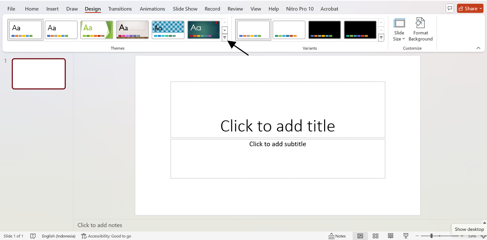
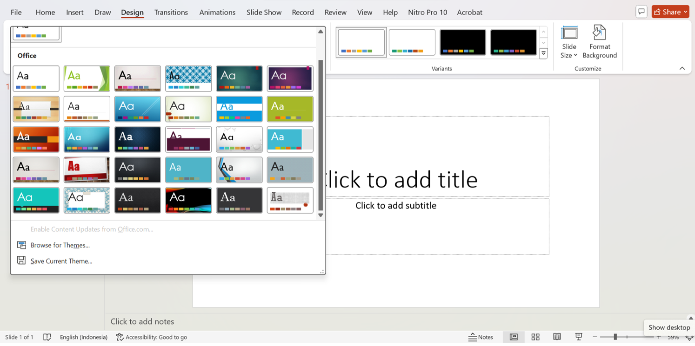
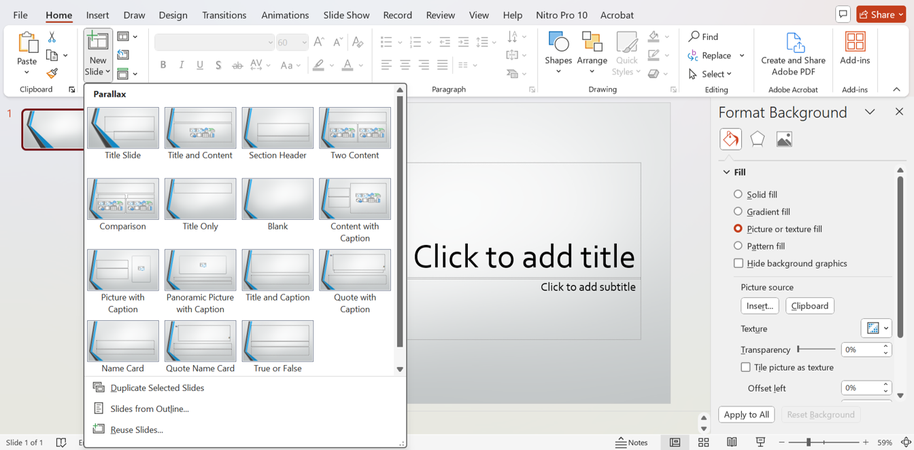
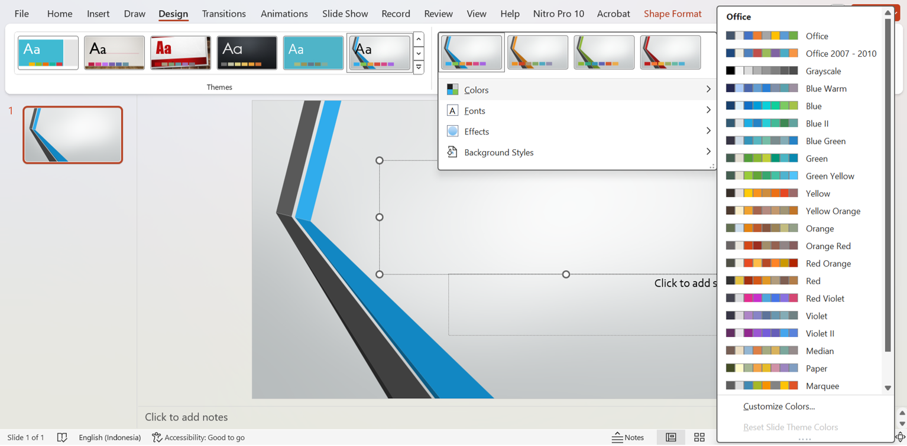
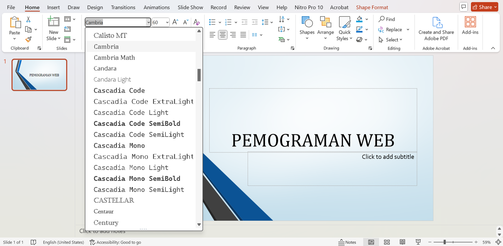
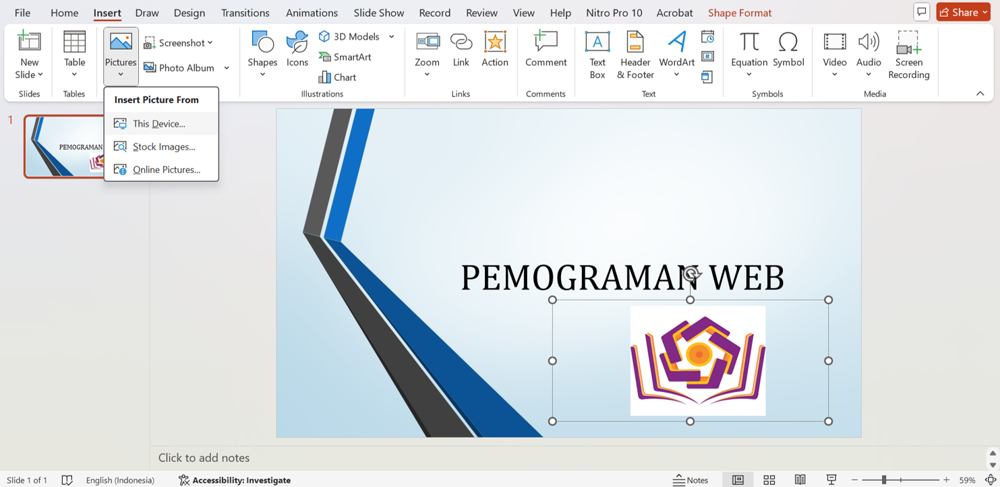

Presentasi yang menarik sangat penting untuk menarik perhatian audiens. Dalam tutorial ini, Anda akan belajar cara menambahkan latar belakang, mengubah warna, menyesuaikan font, dan menambahkan gambar di Microsoft PowerPoint. Dengan langkah-langkah sederhana ini, Anda dapat menciptakan presentasi yang lebih estetis dan profesional. Mari kita mulai!
Cara mengubah latar belakang PowerPoint
1. Klik Design pada tab menu
2. Klik pada tanda panah
3. Pilih latar belakang slide power point sesuai selera
4. Mengatur tata letak font
Cara mengubah warna pada latar belakang
1. Setelah memilih design maka akan muncul pilihan warna
2. Pilih warna sesuai keinginan
Cara mengubah bentuk font dan ukuran
1. Masukkan teks pada kotak yang tersedia di slide
2. Klik tab menu
3. Pilih font sesuai kebutuhan
4. Pilih ukuran font yang dibutuhkan
Cara menambahkan gambar pada slide
1. Klik Insert pada tab menu
2. Klik picture kemudian This device
3. Pilih gambar pada Komputer atau laptop anda
